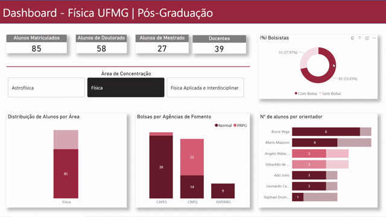
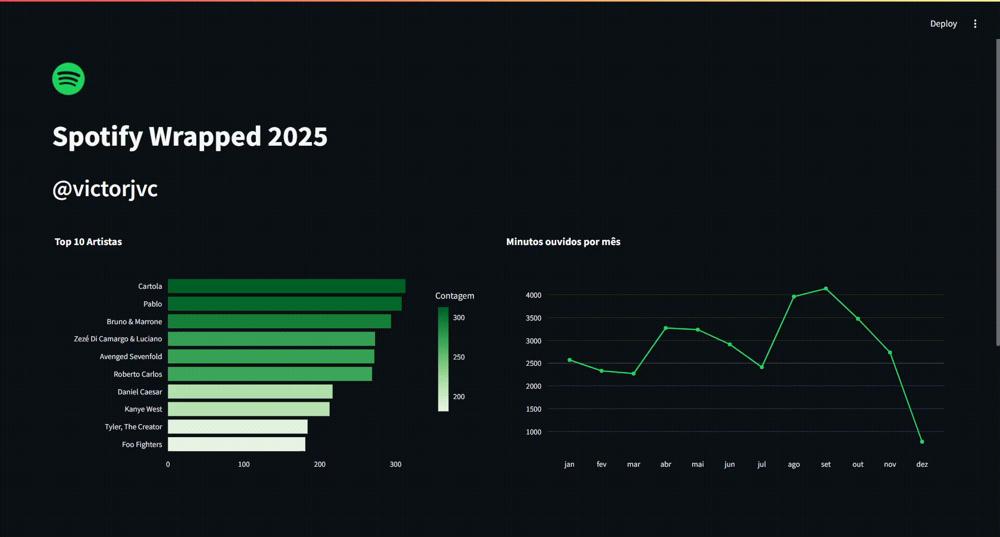
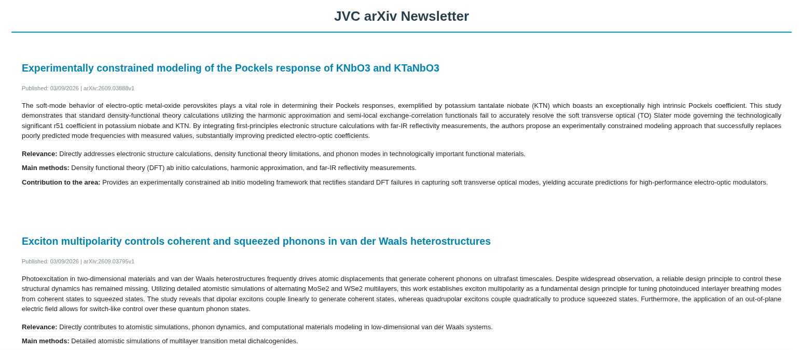

A interseção entre a data science & analytics com o cultura da pesquisa científica para solucionar problemas de negócio e revelar padrões.
Sou formado e mestrando em Física pela UFMG o que muito colaborou para o enriquecimento do meu raciocínio lógico e da minha capacidade analítica. Do mestrado em especial, herdei a construção de uma boa comunicação oral e escrita, e organização e atenção aos detalhes. Além disso, cultivei o hábito de documentar não apenas os resultados, mas também a construção do conhecimento, pois isso torna minhas análises mais reprodutíveis, facilita a comunicação técnica e permite que o conhecimento produzido seja aproveitado e desenvolvido por outras pessoas do ambiente de trabalho em que estou inserido. Dito isso, torna-se claro o meu interesse em trabalhar com equipes multi-área na resolução de problemas.
Estudos de caso e aplicações

Análise de dados públicos para mapear o perfil discente da Pós-Graduação. O dashboard responde a métricas-chave como distribuição por modalidade, área de concentração, agências de fomento e tendências de entrada/saída, auxiliando a tomada de decisão institucional.

Aplicação interativa desenvolvida com Streamlit que consome dados temporais do Spotify para gerar uma análise personalizada anual. Identifica o top 10 artistas, tempo mensal de escuta, distribuição por dias da semana e períodos do dia de maior concentração.

Pipeline de automação que filtra literatura científica diária. Utiliza a API do Google Gemini (gemini-3.5-flash-lite) e técnicas de NLP para avaliar preprints da categoria cond-mat.mtrl-sci no arXiv e recomendar os 3 artigos mais alinhados ao meu contexto de pesquisa.
Ferramentas e tecnologias utilizadas para transformar os dados em conhecimento.